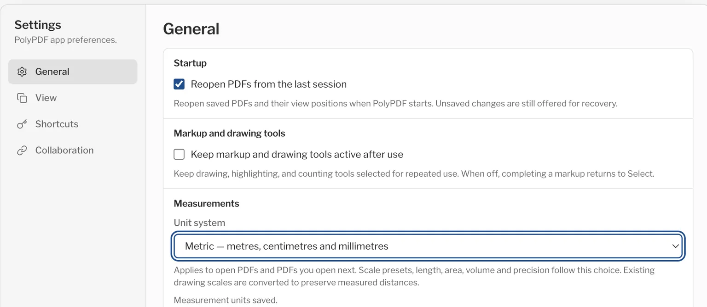
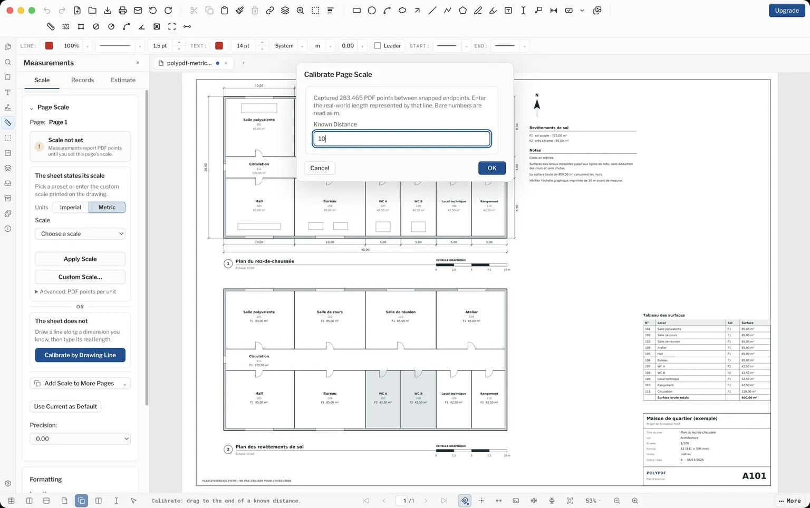
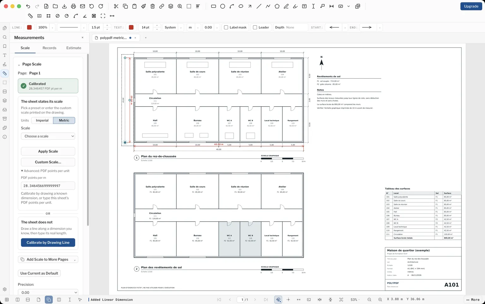
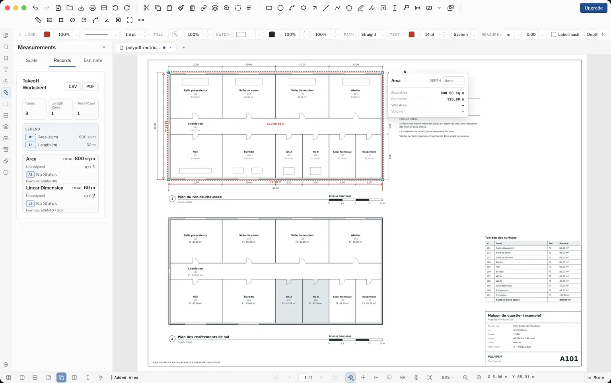
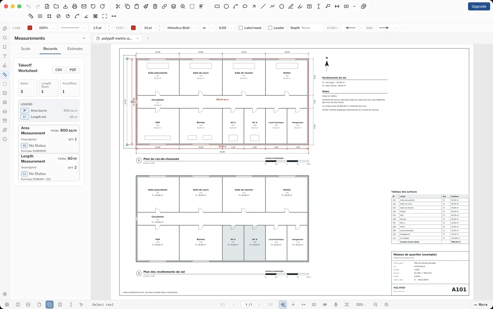
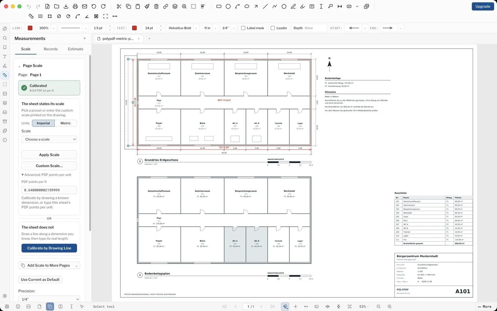

Metric plan check: public Mac 1.6.29 build 101
Tested by the PolyPDF publisher, Euclidean Software LLC, on (US Eastern time) on a MacBook Air with Apple silicon and macOS 26.4.1. This is a publisher test of the public Mac app, not independent certification.
The plan measured 40.00 m wide, 20.00 m deep and 800.00 sq m gross on both the German and French sheets. The two shaded tile rooms measured 85.00 sq m on the French sheet. With Unit system set to Metric, the scale and the width, depth and gross area were unchanged after saving the PDF and quitting and reopening the app.
Download the unmeasured plan, English labels · PDF
Download the saved French sheet · PDF
Download its worksheet export · CSV
Download the F2 flooring export · CSV
Download the saved German sheet · PDF
Download its worksheet export · CSV
No account or email required. The same record as data · JSON
Unmeasured sheets with other labels: German, French, Spanish, Brazilian Portuguese.
What was tested?
| Sheet | Fictional one-page A1 plan at 1:100, drawn in metres. Measured with German and French labels. |
|---|---|
| Units, French sheet | Settings, Measurements, Unit system: Metric. Measurements panel, Formatting, Length: Meters. |
| Units, German sheet | Scale tab, Metric button. Measurements panel, Formatting, Length: Meters. Unit system stayed on Imperial until after the PDF was saved. |
| 10 m scale bar | 283.465 PDF points, so 28.346457 PDF points per metre |
| Width | 40.00 m |
| Depth | 20.00 m |
| Outside gross area | 800.00 sq m, with a 120.00 m perimeter |
| Shaded F2 rooms (French sheet, separate copy) | 85.00 sq m, with a 37.00 m perimeter |
| Worksheet length row | 2 measurements; SUM(40 + 20) = 60 m |
| Worksheet area row | 1 measurement; SUM(800) = 800 sq m |
| Save, quit, reopen with Unit system on Metric | Scale, width, depth and gross area unchanged |
| Reopen with Unit system on Imperial (German sheet) | The same measurements shown in feet: 131'-2 3/4", 8,611.13 sq ft and a scale of 8.64 PDF points per foot |
Repeat the check
- Note your installed version, build and operating system. This test used the public Mac 1.6.29 build 101 download with a fresh user profile and no license key entered.
- Open Settings. Under Measurements, set Unit system to Metric. PolyPDF starts on Imperial, and the choice applies to every PDF you open.

Unit system in Settings. - Open a sheet and turn on View > Snap to Content. In the Measurements panel, under Formatting, set Length to Meters, so a plain number means metres. With Length on Millimeters, the calibration dialog reads plain numbers as millimetres and does not accept “10 m”.
- Click Calibrate by Drawing Line, drag along the printed 10 m scale bar and enter 10. The test span was 283.465 PDF points, giving 28.346457 PDF points per metre.

The calibration dialog on the French sheet. - Choose Linear Dimension and check the printed 40.00 m width and 20.00 m depth. Stop if either reading disagrees with the drawing.

The two checks along the printed dimension lines. - Choose Area and trace the outside boundary: 800.00 sq m. Export the worksheet as CSV.

The gross area and the worksheet. - Save a copy of the PDF, quit the app, reopen it and open the saved copy. Compare the scale and quantities.

After quitting and reopening the app. - For flooring, open a separate copy of the sheet, because the width, depth and gross area use the three-measurement Free allowance. Set Length to Meters, calibrate it, and trace one outline around the two shaded F2 rooms in the floor finish plan: 85.00 sq m. Take the bottom edge to the outer face of the wall, where the dimension lines end. The shading stops at the inner face of that wall, so tracing the shading itself gives a smaller area.
The two F2 rooms.
If Unit system stays on Imperial
The setting in Settings decides how every PDF opens, whatever the file was saved with. On the German sheet, the Metric button on the Scale tab was used without changing Settings. The saved PDF then reopened in feet and inches: 131'-2 3/4", 8,611.13 sq ft and a scale of 8.64 PDF points per foot. These are the same measurements in other units. Choosing Metric showed 40000.00 mm and 800.00 sq m, and setting Unit system to Metric in Settings reopened the file showing 40.00 m and 800.00 sq m. Choosing “Use Current as Default” did not change this.

Read the CSV correctly
The first table contains one area row and one grouped length row. The lower Group/Value summary repeats those quantities by subject; adding both tables would double count them. The 60 m total is the sum of two lengths, 40 m and 20 m. It is not the 120 m perimeter. The 800 sq m area includes walls and is not net flooring or a complete estimate. The 85 sq m F2 area is measured to the dimension lines, with no wall deductions or waste. In the flooring CSV, the lower summary shows the total unrounded, as 85.0000000176.
What this record does not cover
- This record covers build 101 only.
- The plan is fictional and not for construction. It was not reviewed by a local construction professional or checked against any national drawing standard. An AI language check was run on the labels, and it does not replace that review.
- The French sheet was already open when Unit system was changed; the French flooring copy was opened after it was set. The German sheet was measured with the Metric button on the Scale tab and reopened with Unit system on Metric only after the PDF was saved.
- Only the German and French sheets were measured in the app. The drawn lines in the English, Spanish and Brazilian Portuguese sheets were compared by script and match; those three were not measured in the app.
- Windows, Pro features, symbol counts, electrical takeoff, the F1 flooring area and complete estimates were not tested here.
- The test ran under Free limits. No license key was entered, and Pro was not activated or tested.
- The saved sheets were reopened in PolyPDF. The German sheet was also opened in Apple Preview, which showed the area label and outline but not the two dimension labels. Adobe Acrobat and other PDF viewers were not checked.
- The run used automated control of the app’s normal interface. PolyPDF puts the computer’s user name on new markups, so the author was changed to “PolyPDF sample” in the Properties panel before saving. Dates stored in the PDFs reflect the test.
Download PolyPDF for your desktop and check your own workflow before choosing Pro.